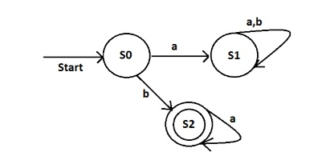
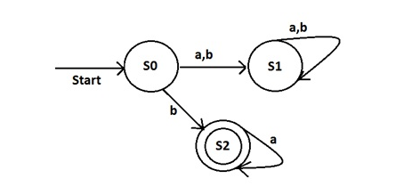
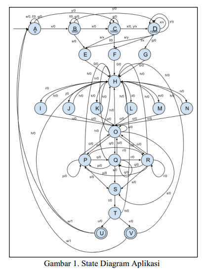

Finite Automata adalah mesin automata dari suatu Bahasa regular. Finite Automata memiliki jumlah state yang banyaknya berhingga dan dapat berpindah-pindah dari suate state ke state yang lainnya. Finite Automata dibagi menjadi Deterministic Finite Automata (DFA) dan Non Deterministic Finite Automata (NFA).
Pada Deterministic Finite Automata, jika suatu state diberi inputan maka state tersebut akan selalu tepat menuju satu state.
Pada Non Deterministic Finite Automata, jika suatu state diberi inputan maka mungkin saja bisa menuju ke beberapa state berikutnya. Misalnya jika di S0 diberi inputan b, maka S0 bisa menuju ke S1 dan S2. NDFA sering kali lebih ringkas dibanding DFA karena tidak harus fully defined.
Teknik spesifikasi formal yang digunakan yaitu dengan membuat state diagram sebagai model perilaku sebuah sistem. State diagram ini akan menjadi dasar dalam pendefinisian tupel dan perancangan flowchart program nantinya. Jenis state diagram yang digunakan yaitu mealy machines dengan konsep Non-Deterministic Finite Automata (NFA). Dengan mealy machines akan terlihat output yang dikeluarkan pada setiap transisi antar state yang terjadi berdasarkan inputan yang diterima dan state sebelumnya. 
Jika ingin membatalkan inputan variasi rasa kopi yang dipilih, dapat diinput h (reset) untuk kembali mengulang inputan ke state H. Sedangkan jika ingin memproses inputan, dapat diinput w (proses) untuk membuat kopi. Mesin kemudian akan mengeluarkan output bernilai 1 (mengeluarkan kopi) dan kembali ke state awal untuk memproses transaksi pembelian kopi yang baru.
Mealy machine didefinisikan dalam 6 tupel,
dengan rumus M = (Q, Ʃ, δ, S, Δ, λ), dimana :
Q= himpunan state
Ʃ= himpunan simbol input
δ= fungsi transisi (δ : Q x Ʃ → Q)
S = state awal (initial state)
Δ= himpunan output
λ = fungsi output untuk setiap transisi
Berdasarkan pendefinisian tersebut, dapat
dibuat konfigurasi mesin sebagai berikut:
Q = {A, B, C, D, E, F, G, H, I, J, K, L, M,
N, O, P, Q, R, S, T, U, V}
Ʃ = {e, f, g, h, I, j, k, l, m, n, o, p, q, r, s, t,
u, x, y, z, 0, 1}
δ(A, e) = A; δ(A, f) = A; δ(A, g) = A;
δ(A, x) = B; δ(A, y) = C;
δ(B, f) = B; δ(B, g) = B;
δ(B, x) = C; δ(B, y) = D;
δ(C, g) = C; δ(C, x) = D; δ(C, y) = D;
δ(D, x) = D; δ(D, y) = D;
δ(B, e) = E; δ(C, e) = E; δ(D, e) = E;
δ(C, f) = F; δ(D, f) = F; δ(D, g) = G;
δ(E, 0) = H; δ(F, 0) = H; δ(G, 0) = H;
δ(H, i) = I; δ(H, j) = J; δ(H, k) = K;
δ(H, l) = L; δ(H, m) = M; δ(H, n) = N;
δ(I, h) = H; δ(J, h) = H; δ(K, h) = H;
δ(L, h) = H; δ(M, h) = H; δ(N, h) = H;
δ(I, o) = O; δ(J, o) = O; δ(K, o) = O;
δ(L, o) = O; δ(M, o) = O; δ(N, o) = O;
δ(O, o) = O; δ(O, h) = H; δ(O, p) = P;
δ(O, q) = Q; δ(O, r) = R;
δ(P, p) = P; δ(P, h) = H; δ(P, q) = Q;
δ(P, o) = O; δ(P, r) = R; δ(P, s) = S;
δ(Q, p) = P; δ(Q, h) = H; δ(Q, q) = Q;
δ(Q, o) = O; δ(Q, r) = R; δ(Q, s) = S;
δ(R, p) = P; δ(R, h) = H; δ(R, q) = Q;
δ(R, o) = O; δ(R, r) = R; δ(R, s) = S;
δ(S, t) = T; δ(T, u) = U;
δ(T, v) = V; δ(T, h) = H;
δ(U, w) = A; δ(U, h) = H;
δ(V, w) = A; δ(V, h) = H;
S = {A}
Δ = {0, 1, x, y}
λ(A, e) = 0; λ(A, f) = 0; λ(A, g) = 0;
λ(A, x) = 0; λ(A, y) = 0;
λ(B, f) = 0; λ(B, g) = 0;
λ(B, x) = 0; λ(B, y) = 0;
λ(C, g) = 0; λ(C, x) = 0; λ(C, y) = x;
λ(D, x) = x; λ(D, y) = y;
λ(B, e) = 0; λ(C, e) = x; λ(D, e) = y;
λ(C, f) = 0; λ(D, f) = x; λ(D, g) = 0;
λ(E, 0) = 0; λ(F, 0) = 0; λ(G, 0) = 0;
λ(H, i) = 0; λ(H, j) = 0; λ(H, k) = 0;
λ(H, l) = 0; λ(H, m) = 0; λ(H, n) = 0;
λ(I, h) = 0; λ(J, h) = 0; λ(K, h) = 0;
λ(L, h) = 0; λ(M, h) = 0; λ(N, h) = 0;
λ(I, o) = 0; λ(J, o) = 0; λ(K, o) = 0;
λ(L, o) = 0; λ(M, o) = 0; λ(N, o) = 0;
λ(O, o) = 0; λ(O, h) = 0; λ(O, p) = 0;
λ(O, q) = 0; λ(O, r) = 0;
λ(P, p) = 0; λ(P, h) = 0; λ(P, q) = 0;
λ(P, r) = 0; λ(P, s) = 0; λ(P, o) = 0;
λ(Q, p) = 0; λ(Q, h) = 0; λ(Q, q) = 0;
λ(Q, r) = 0; λ(Q, s) = 0; λ(Q, o) = 0;
λ(R, p) = 0; λ(R, h) = 0; λ(R, q) = 0;
λ(R, r) = 0; λ(R, s) = 0; λ(R, o) = 0;
λ(S, t) = 0; λ(T, u) = 0;
λ(T, v) = 0; λ(T, h) = 0;
λ(U, w) = 1; λ(U, h) = 0;
λ(V, w) = 1; λ(V, h) = 0;
Dapat dilihat sesuai pendefinisan tupel diatas bahwa mesin dimungkinkan untuk tidak terjadi kesalahan dalam memproses sistem pembayaran dan pilihan kopi yang diinginkan. Mesin akan mengikuti alur inputan dimulai saat menerima uang, memilih ukuran gelas, memilih varian rasa, menambah bahan ekstra, dan memilih suhu kopi. Saat diterima inputan proses, mesin akan membaca simbol-simbol masukan yang diterima dan membuat kopi.